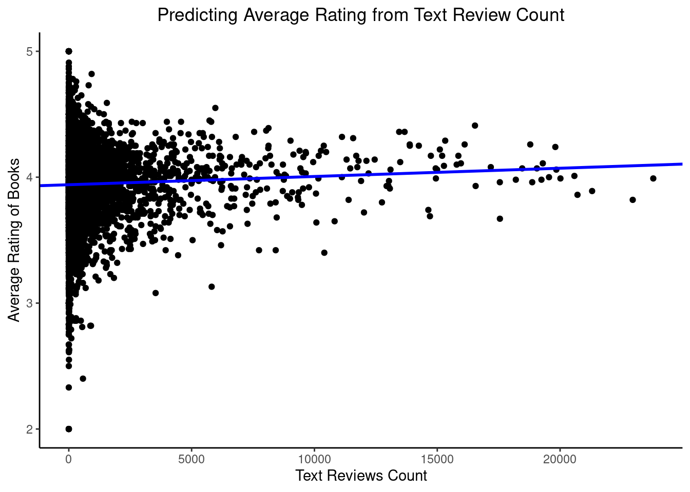

'data.frame': 11125 obs. of 13 variables:
$ X : int 1 2 3 4 5 6 7 8 9 10 ...
$ bookID : int 1 2 4 5 8 9 10 12 13 14 ...
$ title : chr "Harry Potter and the Half-Blood Prince (Harry Potter #6)" "Harry Potter and the Order of the Phoenix (Harry Potter #5)" "Harry Potter and the Chamber of Secrets (Harry Potter #2)" "Harry Potter and the Prisoner of Azkaban (Harry Potter #3)" ...
$ authors : chr "J.K. Rowling/Mary GrandPré" "J.K. Rowling/Mary GrandPré" "J.K. Rowling" "J.K. Rowling/Mary GrandPré" ...
$ average_rating : num 4.57 4.49 4.42 4.56 4.78 3.74 4.73 4.38 4.38 4.22 ...
$ isbn : chr "439785960" "439358078" "439554896" "043965548X" ...
$ isbn13 : num 9.78e+12 9.78e+12 9.78e+12 9.78e+12 9.78e+12 ...
$ language_code : chr "eng" "eng" "eng" "eng" ...
$ num_pages : int 652 870 352 435 2690 152 3342 815 815 215 ...
$ ratings_count : int 2095690 2153167 6333 2339585 41428 19 28242 3628 249558 4930 ...
$ text_reviews_count: int 27591 29221 244 36325 164 1 808 254 4080 460 ...
$ publication_date : chr "16/09/2006" "1/09/2004" "1/11/2003" "1/05/2004" ...
$ publisher : chr "Scholastic Inc." "Scholastic Inc." "Scholastic" "Scholastic Inc." ...Predicting Book Ratings from Text Reviews Count
R
26Summer
data: books.csv
We will be exploring the Goodreads books dataset.
Data Structure
This is the general overview of what the dataset looks like.
Columns
These are the columns from the dataset. We will specifically be looking at the effect of text reviews count on average book ratings.
[1] "X" "bookID" "title"
[4] "authors" "average_rating" "isbn"
[7] "isbn13" "language_code" "num_pages"
[10] "ratings_count" "text_reviews_count" "publication_date"
[13] "publisher" Filtering
Due the extreme outliers from both text review count and average rating, the ranges will be restricted to review counts less than or equal to 25000 and to ratings greater than or equal to 2 to allow for easier interpretation of the data (note that review counts range from 0 to 94265, and ratings range from 0 to 5 in the full dataset).
books_small <- select(books, bookID, title, average_rating, num_pages, ratings_count, text_reviews_count, publisher)
books_small_lessReviews <- books_small %>%
filter(text_reviews_count <= 25000 & average_rating >= 2)Linear Regression Model
We will run a linear regression model that predicts the effect of text reviews count on average book ratings. A regression line will be derived from this and fit to the raw data plot.
Call:
lm(formula = average_rating ~ text_reviews_count, data = books_small_lessReviews)
Residuals:
Min 1Q Median 3Q Max
-1.9403 -0.1703 0.0183 0.1897 1.0597
Coefficients:
Estimate Std. Error t value Pr(>|t|)
(Intercept) 3.940e+00 2.908e-03 1354.886 < 2e-16 ***
text_reviews_count 6.551e-06 1.820e-06 3.599 0.000321 ***
---
Signif. codes: 0 '***' 0.001 '**' 0.01 '*' 0.05 '.' 0.1 ' ' 1
Residual standard error: 0.2934 on 11070 degrees of freedom
Multiple R-squared: 0.001169, Adjusted R-squared: 0.001078
F-statistic: 12.95 on 1 and 11070 DF, p-value: 0.000321Visualising the Data
We will visualise the data by creating a scatterplot of average ratings on text reviews count and fit a regression line derived from the model in the previous step.

Interpretation
We can see that number of text reviews has minimal effect on average book ratings. However, a small positive relationship is evident, whereby the greater the review count, the higher the ratings seem to be.